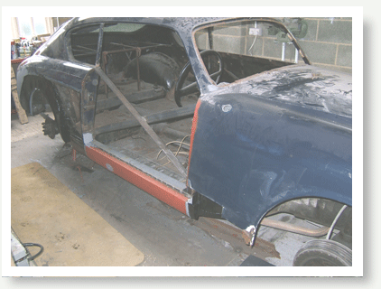
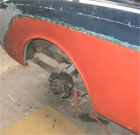
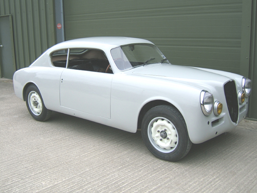
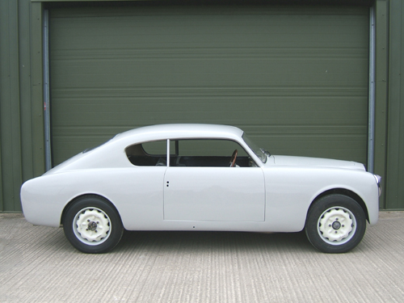
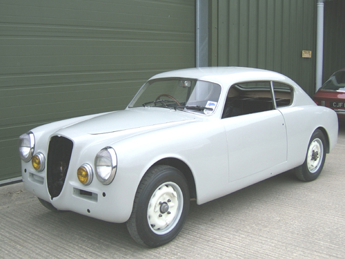
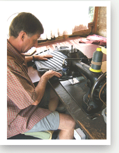

RESTORATION
Although primarily involved in classic cars sales we do occasionally offer
restoration services.
In the main body restoration and paintwork. Previously under going a full
body
restoration,a Lancia Aurelia B20GT,4th Series.
The pictures show the bracing required to keep the shell stiff whilst
the complete
inner and outer sills are replaced along with about 1ft of the floor pan
up to the sill.
The lower rear wing including wheel arch replacement which also required
the rebuilding of the inner wheel arch.
A new rear valance fitted.
  
  |
S2 Aurelia B20
Also to pass through has been this beautiful,early series 2 Lancia
Aurelia B20.
Having already had a considerable amount of bodywork restoration carried
to the lower regions of the car,including new lower door skin sections,rear
wheelarches,lower wings front and back,sills and work to both front &
rear valances.We were asked to re-profile the area's affected and then
re-paint,blending the new paint into the old.



TRIMMING
Trimming services are also available from our professional trimmer.
Anything from a small repair to a complete full leather re-trim
can be undertaken.
